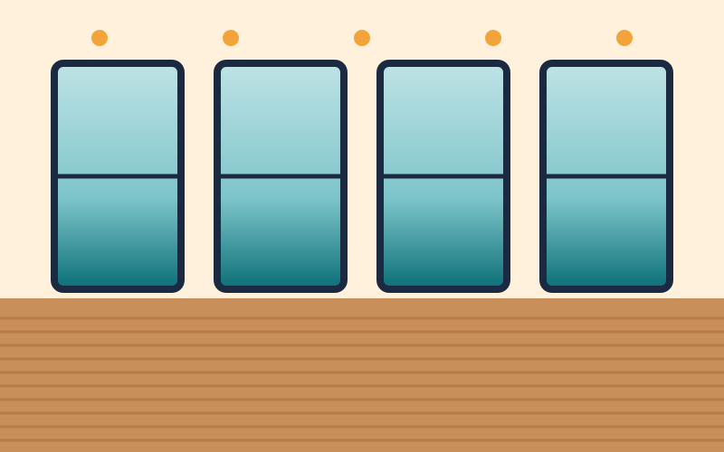

Arena Stage
A sand-floor stage on the beachfront. It hosts the daytime sand workshops, the sunset socials and the open-air shows.
Passeig de la Ola 146011 Valencia
Comunitat Valenciana
- Step-free
- Yes
- Accessible toilets
- Yes
- Quiet space
- No
Three venues within a short walk of each other along the beachfront: sand and sea by day, club floor by night.
A sand-floor stage on the beachfront. It hosts the daytime sand workshops, the sunset socials and the open-air shows.
Passeig de la Ola 1
An air-conditioned seaside pavilion with a sprung wooden floor. It hosts most workshops, the evening practica socials and the pavilion showcases.
Carrer del Salitre 14
The indoor club for the main night socials. It has a large floor, a stage for live acts and two bars. Late sets run until the early morning.
Carrer de la Marinada 8